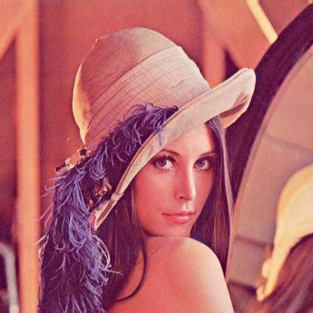

Video Compression Homework 1 Report
Student ID: [314554025]
Name: [鄭睿宏]
Date: 2025-09-24
Objective
This assignment aims to explore color space transformations using a given image (lena.png). The task includes:
- Converting the image from RGB to:
- YUV color space
- YCbCr color space
- Generating grayscale images of the individual channels:
- RGB → R, G, B
- YUV → Y, U, V
- YCbCr → Y, Cb, Cr
All transformations are done manually using the provided formulas without using any built-in color conversion functions.
Input Example: lena.png

Input Figure: lena.png
1. RGB Components
Due to OpenCV's default image reader setting being BGR, a BGR-to-RGB conversion is required for convenience before further processing.
Each color channel (R, G, B) was extracted and saved as a grayscale image.
Figure 1: Red Channel
Figure 2: Green Channel
Figure 3: Blue Channel
2. YUV Transformation
The RGB to YUV transformation uses the following formulas:
Figure 4: Y Channel (YUV)
Figure 5: U Channel (YUV)
Figure 6: V Channel (YUV)
3. YCbCr Transformation
The RGB to YCbCr transformation uses the following formulas:

Figure 7: Y Channel (YCbCr)
Figure 8: Cb Channel (YCbCr)
Figure 9: Cr Channel (YCbCr)
4. Implementation Notes
The project dependencies can be managed either through a requirements.txt file or by using uv (ref: README.md).
For the implementation, I implemented with "native-python" (readable) and "NumPy" (fast) version:
- implemented in native Python with clear and readable logic.
numpy_main.py:
- implemented using NumPy arrays to achieve accelerated computation.
5. Conclusion
This assignment demonstrates manual implementation of RGB to YUV and YCbCr transformations and visualization of each color channel. Understanding the transformation formulas helps reinforce how image data is represented and manipulated in different color spaces.